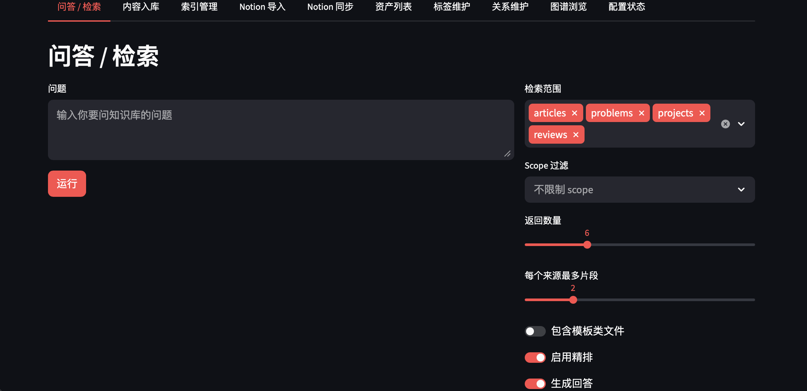
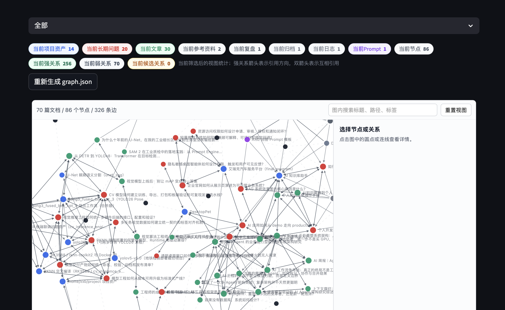

面向个人长期知识资产的本地优先 RAG 系统，把 Markdown、检索、答案生成、Notion 同步与知识图谱治理整合为一个可持续维护的工作台。

这个项目以本地 Markdown 为知识源，围绕个人长期知识资产建立完整闭环：内容入库、元数据标准化、向量索引、检索精排、答案生成、关系维护与图谱浏览都在同一工作区内完成。
系统默认优先在本机完成索引和检索；生成答案时可调用 DeepSeek，并在不可用时回退到本地 Ollama。敏感问题也可以关闭云端模型，保持本地生成。
检索链路按职责拆分，既保证 Apple Silicon 上的安装稳定性，也保留后续替换索引或模型的空间。
系统把文档类型、状态、scope、summary、普通标签、Wiki 标签和强关系统一进 front matter。内容入库和关系维护都先生成预览，确认后才写回文件，避免自动化直接污染知识源。
多 Workspace 机制让不同知识域共享同一套能力但保持数据隔离；索引重建会复用未变化片段的向量，只处理新增或正文发生变化的内容。
项目支持 Notion 导入与同步，后台任务展示实时进度、重试日志和失败原因。同步状态会记录断点，内容哈希用于跳过没有变化的条目；项目与长期问题之间的双向关系也会同步为数据库属性。
所有写入动作都遵循“预览、确认、执行”的边界，密钥只保存在本地环境文件中，不进入仓库。
知识图谱区分人工确认的强关系、由 scope 和 Wiki 标签形成的弱关系，以及待确认的候选关系。用户可以按文档类型、目录、scope、标签和关键词筛选，也可以聚焦某一节点的一跳关系。
